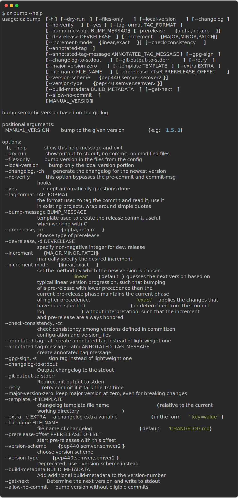

bump

About¶
cz bump is a powerful command that automatically determines and increases your project's version number based on your commit history.
It analyzes your commits to determine the appropriate version increment according to semantic versioning principles.
Note
In the following documentation, the term "configuration file" refers to pyproject.toml, .cz.toml or other configuration files.
We will use pyproject.toml as the configuration file throughout the documentation.
See Configuration file for more details.
Key Features¶
- Automatic Version Detection: Analyzes commit history to determine the appropriate version bump
- Manual Version Control: Supports manual version specification when needed
- Pre-release Support: Handles alpha, beta, and release candidate versions
- Multiple Version Schemes: Supports both PEP 440 and semantic versioning formats
Version Increment Rules¶
The version follows the MAJOR.MINOR.PATCH format, with increments determined by your commit types:
| Increment | Description | Conventional commit map |
|---|---|---|
MAJOR |
Breaking changes introduced | BREAKING CHANGE, bang (e.g. feat!) |
MINOR |
New features | feat |
PATCH |
Fixes and improvements | fix, perf, refactor |
--version-scheme¶
By default, Commitizen uses PEP 440 for version formatting. You can switch to semantic versioning using either:
-
Command line:
cz bump --version-scheme semver -
Configuration file:
pyproject.toml[tool.commitizen] version_scheme = "semver"
Available options are:
pep440: PEP 440 (default and recommended for Python projects)semver: Semantic Versioning (recommended for non-Python projects)
You can also set this in the configuration file with version_scheme = "semver".
Note
pep440 and semver are quite similar, although their difference lies in
how the prereleases look. For example, 0.3.1a0 in pep440 is equivalent to 0.3.1-a0 in semver.
The following table illustrates the difference between the two schemes:
| Version Type | pep440 | semver |
|---|---|---|
| Non-prerelease | 0.1.0 |
0.1.0 |
| Prerelease | 0.3.1a0 |
0.3.1-a0 |
| Devrelease | 0.1.1.dev1 |
0.1.1-dev1 |
| Dev and pre | 1.0.0a3.dev1 |
1.0.0-a3-dev1 |
Incomplete Version Handling
Commitizen treats a three-part version (major.minor.patch) as complete.
If your configured version is incomplete (for example, 1 or 1.2), Commitizen pads missing parts with zeros when it needs major/minor/patch for tag formatting.
The tag output depends on your tag_format: formats using ${version} keep 1/1.2, while formats using ${major}.${minor}.${patch} will render 1.0.0/1.2.0.
When bumping from an incomplete version, Commitizen looks for the latest existing tag that matches the provided release prefix.
For example, if the current version is 1.2 and the latest 1.2.x tag is 1.2.3, then a patch bump yields 1.2.4 and a minor bump yields 1.3.0.
Tip
To control the behaviour of bumping and version parsing, you may implement your own version_scheme by inheriting from commitizen.version_schemes.BaseVersion or use an existing plugin package.
PEP440 Version Examples¶
Commitizen supports the PEP 440 version format, which includes several version types. Here are examples of each:
Standard Releases¶
0.9.0 # Initial development release
0.9.1 # Patch release
0.9.2 # Another patch release
0.9.10 # Tenth patch release
0.9.11 # Eleventh patch release
1.0.0 # First stable release
1.0.1 # Patch release after stable
1.1.0 # Minor feature release
2.0.0 # Major version release
Pre-releases¶
1.0.0a0 # Alpha release 0
1.0.0a1 # Alpha release 1
1.0.0b0 # Beta release 0
1.0.0rc0 # Release candidate 0
1.0.0rc1 # Release candidate 1
Development Releases¶
1.0.0.dev0 # Development release 0
1.0.0.dev1 # Development release 1
Combined Pre-release and Development¶
1.0.0a1.dev0 # Development release 0 of alpha 1
1.0.0b2.dev1 # Development release 1 of beta 2
Note:
postreleases (e.g.,1.0.0.post1) are not currently supported.
Command line options¶

--version-files-only¶
Bumps the version in the files defined in version_files without creating a commit and tag on the git repository.
cz bump --version-files-only
--changelog¶
Generate a changelog along with the new version and tag when bumping. See changelog for more details.
cz bump --changelog
--prerelease¶
The bump is a pre-release bump, meaning that in addition to a possible version bump the new version receives a
pre-release segment compatible with the bump's version scheme, where the segment consists of a phase and a
non-negative number. Supported options for --prerelease are the following phase names alpha, beta, or
rc (release candidate). For more details, refer to the
Python Packaging User Guide.
Note that as per semantic versioning spec
Pre-release versions have a lower precedence than the associated normal version. A pre-release version indicates that the version is unstable and might not satisfy the intended compatibility requirements as denoted by its associated normal version.
For example, the following versions (using the PEP 440 scheme) are ordered by their precedence and showcase how a release might flow through a development cycle:
1.0.0is the currently published version1.0.1a0after committing afix:for pre-release1.1.0a1after committing an additionalfeat:for pre-release1.1.0b0after bumping a beta release1.1.0rc0after bumping the release candidate1.1.0next feature release
--increment-mode¶
--increment-mode=linear (default)¶
Ensures that bumping pre-releases maintains linearity.
Bumping a pre-release with lower precedence than the current pre-release phase maintains the current phase of higher precedence.
For example, if the current version is 1.0.0b1 then bumping with --prerelease alpha will continue to bump the beta phase.
--increment-mode=exact¶
Applies the exact changes that have been specified with --increment or determined from the commit log.
For example, --prerelease beta will always result in a b tag, and --increment PATCH will always increase the patch component.
Examples¶
The following table illustrates the difference in behavior between the two modes:
| Increment | Pre-release | Start Version | --increment-mode=linear |
--increment-mode=exact |
|---|---|---|---|---|
MAJOR |
2.0.0b0 |
2.0.0 |
3.0.0 |
|
MINOR |
2.0.0b0 |
2.0.0 |
2.1.0 |
|
PATCH |
2.0.0b0 |
2.0.0 |
2.0.1 |
|
MAJOR |
alpha |
2.0.0b0 |
3.0.0a0 |
3.0.0a0 |
MINOR |
alpha |
2.0.0b0 |
2.0.0b1 |
2.1.0a0 |
PATCH |
alpha |
2.0.0b0 |
2.0.0b1 |
2.0.1a0 |
--check-consistency¶
Check whether the versions defined in version_files and the version in Commitizen configuration are consistent before bumping version.
cz bump --check-consistency
For example, if we have the following configuration file pyproject.toml:
[tool.commitizen]
version = "1.21.0"
version_files = [
"src/__version__.py",
"setup.py",
]
and the following version files src/__version__.py and setup.py:
__version__ = "1.21.0"
from setuptools import setup
setup(..., version="1.0.5", ...)
When you run cz bump --check-consistency, Commitizen will verify that the current version in pyproject.toml (1.21.0) exists in all files listed in version_files.
In this example, it will detect that setup.py contains 1.0.5 instead of 1.21.0, causing the bump to fail.
Partial updates on failure
If the consistency check fails, Commitizen may have already updated some files (like pyproject.toml and src/__version__.py) before detecting the inconsistency.
In this case, you'll need to restore the files to their previous state.
To resolve this issue:
-
Restore the modified files to their previous state:
git checkout . -
Manually update the version in
setup.pyto match the version inpyproject.toml:setup.pyfrom setuptools import setup - setup(..., version="1.0.5", ...) + setup(..., version="1.21.0", ...) -
Run the bump command again:
cz bump --check-consistency
--local-version¶
Bump the local portion of the version.
For example, if we have the following configuration file pyproject.toml:
[tool.commitizen]
version = "5.3.5+0.1.0"
When you run cz bump --local-version, it will bump only the local version 0.1.0 and keep the public version 5.3.5 intact, bumping to the version 5.3.5+0.2.0.
--annotated-tag¶
Create annotated tags.
It is also available via configuration files.
For example, in pyproject.toml:
[tool.commitizen]
annotated_tag = true
Note
By default, Commitizen uses lightweight tags.
--annotated-tag-message¶
Create annotated tags with the given message.
It is also available via configuration files.
For example, in pyproject.toml:
[tool.commitizen]
annotated_tag_message = "Annotated tag message"
--changelog-to-stdout¶
Send the incremental changelog generated by cz bump to stdout.
Any other messages generated by cz bump will be sent to stderr.
When this flag is used, --changelog is implied.
However, it is recommended to set --changelog (or the setting update_changelog_on_bump) explicitly when the option --changelog-to-stdout is used.
Useful scenarios
Pipe the newly created changelog to another tool.
The output can be redirected to an auditing system, or used to create a GitHub Release, etc.
cz bump --changelog --changelog-to-stdout > body.md
--git-output-to-stderr¶
Redirects git commands output to stderr.
Useful when used with --changelog-to-stdout and piping the output to a file.
For example, git commit output may pollute stdout, so it is recommended to use this flag when piping the output to a file.
--retry¶
If you use tools like pre-commit, you can add this flag. It will retry the commit if it fails the first time.
Useful to combine with code formatters, like Prettier.
--major-version-zero¶
Breaking changes do not bump the major version number.
Say you have a project with the version 0.1.x and you commit a breaking change like this:
fix(magic)!: fully deprecate whatever
and you run
cz bump --major-version-zero
Then the version of your project will be bumped to 0.2.0 instead of 1.0.0.
Note
A project in its initial development should have a major version zero, and even breaking changes should not bump that major version from zero. This command ensures that behavior.
We recommend setting major_version_zero = true in your configuration file while a project
is in its initial development. Remove that configuration using a breaking-change commit to bump
your project's major version to v1.0.0 once your project has reached maturity.
Warning
This option is only compatible with projects that have major version number zero, 0.x.x for example.
It fails when used with projects that have a version number greater than zero like 1.x.x.
If used together with a manual version, the command also fails.
# This fails
cz bump 0.1.0 --major-version-zero
--gpg-sign¶
Creates gpg signed tags.
cz bump --gpg-sign
Note
By default, Commitizen uses lightweight tags.
--template¶
Provides your own changelog jinja template. See the template customization section
--extra¶
Provides your own changelog extra variables by using the extras settings or the --extra/-e parameter.
cz bump --changelog --extra key=value -e short="quoted value"
See the template customization section.
--build-metadata¶
Specifies additional metadata in the version string.
# creates a version like `1.1.2+yourmetadata`.
cz bump --build-metadata yourmetadata
Example usage
- Git hash in version
- Labeling the version with additional metadata.
Note
Commitizen ignores everything after + when it bumps the version.
It is therefore safe to write different build-metadata between versions.
Warning
Normally, you should not use this functionality, but if you decide to do so, keep in mind that:
- Version
1.2.3+a, and1.2.3+bare the same version! Tools should not use the string after+for version calculation. This is probably not a guarantee (example in helm) even tho it is in the spec. - It might be problematic having the metadata in place when doing upgrades depending on what tool you use.
Warning
This parameter is not compatible with --local-version as it uses the same part of the version string.
--get-next¶
Similar to --dry-run but only outputs the next version.
# outputs 1.0.1 if the current version is 1.0.0 and the increment is PATCH
cz bump --get-next
Useful for determining the next version based on CI for non-production environments/builds.
Compare with --dry-run
--dry-run provides a more detailed output including the changes as they would appear in the changelog file, while --get-next only outputs the next version.
The following is the output of cz bump --dry-run:
bump: version 3.28.0 3.29.0
tag to create: v3.29.0
increment detected: MINOR
The following is the output of cz bump --get-next:
3.29.0
Warning
The --get-next flag will raise a NoneIncrementExit if the found commits are not eligible for a version bump.
For information on how to suppress this exit, see Ignoring Exit Codes.
--allow-no-commit¶
Allow the project version to be bumped even when there's no eligible version.
Example usage:
# Force to bump a minor version
cz bump --increment MINOR --allow-no-commit
# bump version to 2.0.0 even when there's no breaking changes or even no commits
cz bump --allow-no-commit 2.0.0
Default increment
The increment is overridden to PATCH if there is no increment detected or specified.
In other words, cz bump --allow-no-commit allows you to bump the version to the next patch version even when there is no eligible commit.
# will bump to `1.0.1` if the current version is `1.0.0`.
cz bump --allow-no-commit
# bump version to 2.0.0 even when there's no breaking changes or even no commits
cz bump --allow-no-commit 2.0.0
--tag-format¶
tag_format and [version_scheme][version_scheme] are combined to make Git tag names from versions.
These are used in:
cz bump: Find previous release tag (exact match) and generate new tag.- Find previous release tags in
cz changelog. - If
--incremental: Using the latest version found in the changelog, scan existing Git tags with 89\% similarity match. --rev-rangeis converted to Git tag names withtag_formatbefore searching Git history.- If the
scmversion_provideris used, it uses different regexes to find the previous version tags: - If
tag_formatis set to$version(default):VersionProtocol.parser(allowsvprefix) - If
tag_formatis set: Custom regex similar to SemVer (not as lenient as PEP440 e.g. on dev-releases)
Commitizen supports two types of formats, a simple and a more complex.
cz bump --tag-format="v$version"
cz bump --tag-format="v$minor.$major.$patch$prerelease.$devrelease"
In your configuration file:
[tool.commitizen]
tag_format = "v$major.$minor.$patch$prerelease"
The variables must be preceded by a $ sign and optionally can be wrapped in {}. The default is $version.
Supported variables:
| Variable | Description |
|---|---|
$version, ${version} |
fully generated version |
$major, ${major} |
MAJOR increment |
$minor, ${minor} |
MINOR increment |
$patch, ${patch} |
PATCH increment |
$prerelease, ${prerelease} |
Prerelease (alpha, beta, release candidate) |
$devrelease, ${devrelease} |
Development release |
--yes¶
Automatically answers yes to all interactive prompts during the bump process, allowing the command to run without manual confirmation.
cz bump --yes